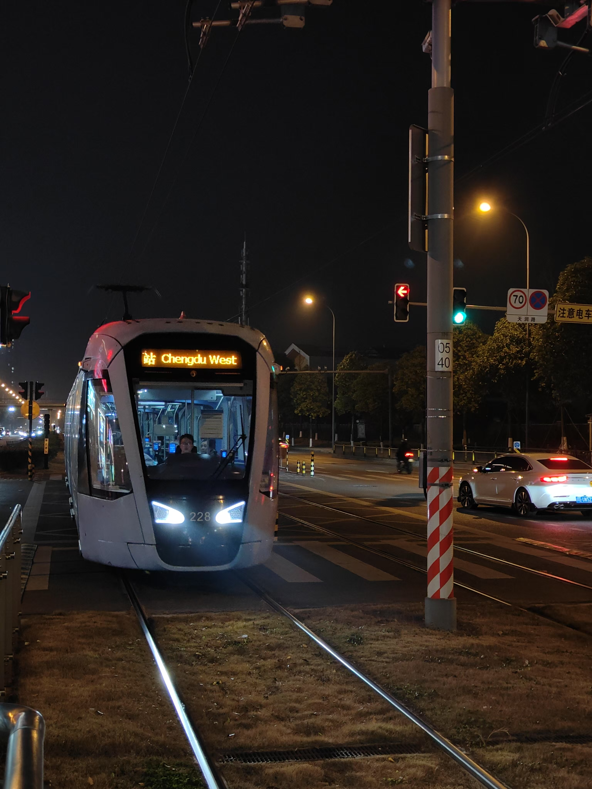
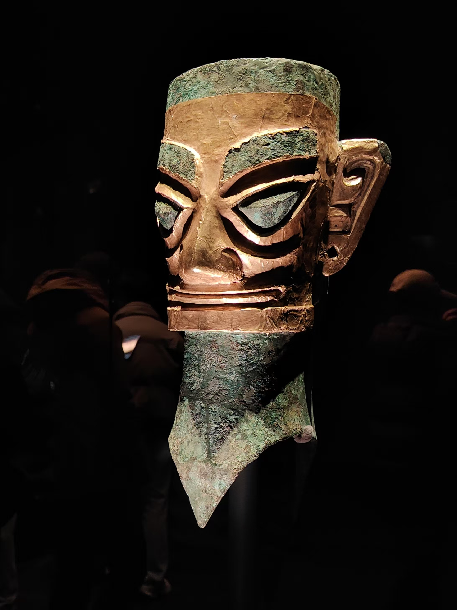
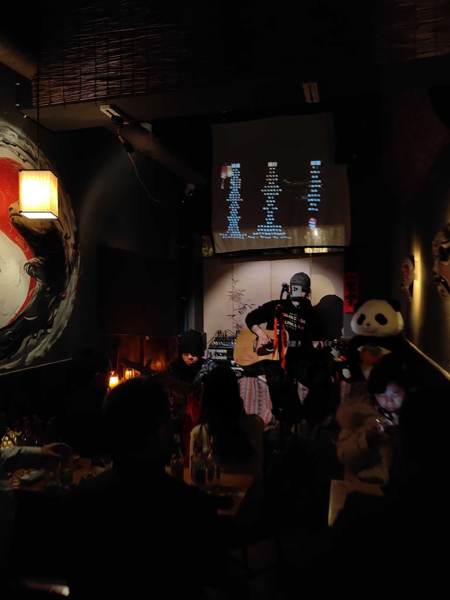

从北京西站出发，坐上到成都最快的一趟车。虽然不是回家，但却有一种终于离开北京的快感。看到车站的超多人流，也只是感慨些许，早已没有了踏上长途旅行的期待或失落，不过电影一二部，泡面一二碗尔尔。车上并没有什么奇遇，只是xj在吃完泡面后去厕所爽吐了一下。路上除了电影之外，我想的只是，又和一个新的人出来旅行，会不会有任何奇怪的情况出现？
一
到达成都，地铁转到人民公园。拖着行李走出地铁站，潮湿的地面，远处灯光下微微伸手的毛泽东像，路口叫买的烤肠构成了我对成都的第一印象。买上一根加了辣椒面的烤肠，便打车到酒店。车窗外微微飘着的小雨和相对黑暗的小路一下就战胜了北京冬天的干燥和衰败感。我已经对成都印象很好了。

xj突然质疑成都的繁华程度，一搜却发现成都的gdp排名前列。正如北京gdp如此之高，但却并没有给我任何繁华感。也许这可以称之为城市自卑？我总是觉得，外面的世界都应该比曲靖繁华许多倍。
二
第二天的安排并不很满，关掉闹钟，睡到日上三竿才起床前往成都博物馆。路上品尝了老妈蹄花，不过却被我加上了辣椒油，也许不太正宗，但是也开启了在成都被辣的旅程。成都博物馆并没有什么惊艳之处，下午四点就早早离开。然后计划外地误入天府红。满眼的二次元周边让我感到成都不同于北京的活力。 虽然不是很喜欢二次元，但是这里的活力让我感到心情大好，对成都的印象又好了几分。

短暂休息过后，就来到春熙路吃晚饭。看到著名的挂墙大熊猫和王府井同款裸眼3D，并没有任何感触。走入一个小吃街，买了一张刮刮乐，一如既往地没中。吃了一个朴素的鸡公煲，离开小吃街进入著名的ifs中心。 一种强烈的压抑感袭来。这里随处可见的高奢品牌，见不到一个熟悉的字眼。脑海里立刻响起了《三里屯的夜》“五光色的楼梯让我拒绝抬起头”这样的旋律。但是出于拍一个游客照的目的，转了一圈爬上了顶楼拍了一个熊猫脸。
今天因为天府红给我的好印象已经完全丢失，这里没有大量的人流，只有少量的人，带着从这里或那里来的花不完的资产，在这里肆意挥霍。 和北京没有什么区别，所以这就是我的puq文案“心情就像是春熙路的夜”的出处。还好xj从他的小迷妹那里听说了一家位于太古里的书店，看到一些自己想看和已经看过的书，也就感到一些些治愈。我又想到了在深圳看到城市书店的感觉，那是一种羡慕感。我多么想能让幼年的我能够开心地走进这些书店，到处翻看这些新奇的书。从书店出来心情也就变的好一些了。

三
第三天特种兵前往青城山都江堰。不得不早起了一下，坐上拥挤的城际列车，到达城郊的青城山。在车上就已经很期待今日的行程，相比于市内的熙熙攘攘，我总是更喜欢登山后略带疲惫地看着云与山。来到青城山后，眼前不是老君山一样的险峻与美，而是一幅饱和度拉满的深青色油画。

山路上站着青苔的亭子，湖边随风飘荡的青叶，若隐若现的古风建筑，俨然一幅山水画模样。至于山上丰富的道教庙宇和西游记取景点，并没有给我太多深刻的印象。下山时险峻的山路也没有盖过青的印象。于是我在puq仅发了一个“青”字，zdx评论道：“我猜另外两个人发的是‘城’和‘山’。”虽然我们发的并不是青城山三个字，但也饶有趣味。
离开青城山打车前往都江堰。或许因为刚刚的亮青色，我对枯水期的都江堰并没有太多好感。现场查询了都江堰作为水利工程的伟大之处，我们穿过摇晃的吊桥，走过鱼嘴，飞沙堰，就在饥饿和疲惫的驱使下离开。 回去的路上，买了一个很难吃的面包，此刻却被我们三人争抢。我一直抗拒的特种兵旅游，现在看来，也是一种别样的体验？

离开都江堰，从犀浦站下车，车站旁有一个乞讨的大哥，拿着话筒唱着《成都》。在成都的公共场合听到了《成都》，有一种难以言说的感觉。从到成都的第一天起，我就在期待着，能在某一个地铁的通道里，看到一个弹着吉他的歌手。给大哥v了10元，就打车前往电子科大，跟xj赴约。吃完很辣的红油火锅，回去的路上体验了下有轨电车，但是却给我一种无用感，或许是对它的期待远超过它本身的意义导致的？
四
第四天是休息日，前一晚两人玩炉石到2点，睡前两人决定退款第二天10点的直通车，并睡到了11点半，也就错过了熊猫的活跃期。下午两点半到达熊猫基地，只看到已经跟去世一样瘫倒的熊猫。寻找小熊猫也无果，只看到了xj吸引孔雀的珍贵画面。不过也符合我对熊猫基地的预期，网红的旅游景点总是这样，让远处的人日思夜想，到了之后却让人失望。

白天的插曲导致了晚上赴约迟到，xj被公金作业所困，只好留在酒店受苦。坐了接近1个半小时的地铁，来到温江区。地铁站口就是大学城常见的小吃街。热闹的气息相比于春熙路的冷奢让我有一种这里才是市中心的感觉。我不由得有一种羡慕感。北京常有的萧瑟感和五道口那种不属于我的热闹，远远逊色于这里的小吃与生活。晚上几乎是踩着末班车回酒店。12点到达酒店，xj还在电脑前赶作业，听完他的街边小故事和对宽窄巷子的痛骂，就带着对三星堆的期待早早睡了。

五
第五天踩点上了直通车，前往了最期待的三星堆。难以形容心中的震撼。作为半个博物馆爱好者，已经对中原风格的青铜器有一些审美疲劳。三星堆博物馆展示的则是独具特色的人面，独特的鱼鸟崇拜，组合起来巨大的青铜器。 “尔来四万八千岁，不与秦塞通人烟”造就了这种震撼。作为云南人，总以南蛮自称，但也只是来自中原的移民。中原的融合，却让三星堆这样独特的文化汇入主流。
下午4点比计划提前离开三星堆，晚饭后决定去玉林路走一走。shy上次已经提到的“the 小酒馆”已经吸引我前来打卡。走进一家有驻唱歌手的小酒馆。昏黄的小灯光和弹吉他的歌手给了我最好的感觉。除去很贵的菜单和声音过大的乐声之外，还是给了我很多好感。其实我不喜欢吵闹的环境，也有些讨厌喝酒。可是身处这样环境，我在想，赵雷在这里遇到的人是怎样的，他与小酒馆的老板到底有什么故事？正如我今晚和三个版纳人玩你画我猜，旅行的意义就是探访新的地方和新的人。这也算是赵雷吸引我的地方，他的歌总是在讲述一些故事，并且总会与我们大家共情。
过了许久，小酒馆已经接近打烊，旁边的一个大哥起身为他身边的女孩唱了一首《成都》。可我并不觉得应景，我脑子里响起的其实是《阿卜杜拉》的旋律。因为今晚的奇妙的感觉并不是成都这座城市给我的，而是这个酒馆内大声说话的东北大哥，和有着北漂经历的主唱歌手给我的。于是我在puq写了《阿卜杜拉》的歌词“在欢笑声中撞响最后一杯酒说再见”，成都再见。
六
我想起了，在北京时和zdx唱歌，我唱着赵雷的《再见北京》。他问我，“真的有人喜欢北京吗？”我记不得当时我的回答，但我现在认为，就是歌词中那句“带不走在这个城市我留下的心”。就像我们刚到成都的感受一样，其实每个城市的风貌没有太多不同，但是我们总把回忆的意义赋予给城市。前几天紫薇节shy来曲靖，一起去吃了土菜。离开土菜馆的时候，他低声和我说:“有没有阿卜杜拉的感觉？”可是这里不过是一个土菜馆，也没有任何的氛围。但是我猜也许是故地重游，他把回忆都寄托在曲靖这座城市上了。
写到这里决定，以后每到一个城市，尽量写点东西。从成都伊始，也许因为，成都有一些特殊意义？
2025.2